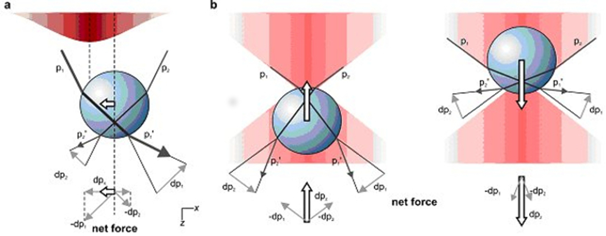
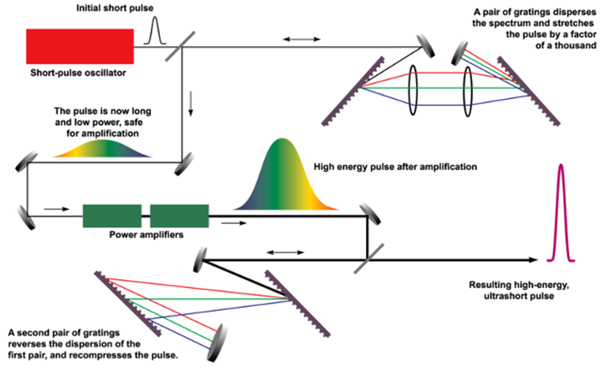

Chirped Pulse Amplification
October, 2018
This week the Swedish Academy announced the Nobel Prize for Physics, and I saw a familiar name on the list- Waterloo's own Professor Donna Strickland! I learned of the news waking up to scads of messages from friends and family asking if I knew the professor. In fact, I had worked in a lab connected to hers as a freshman, and learned how to do chirped pulse amplification right next door to the technique's inventor.
The prizes this year were alotted for inventions of new optical techniques. Arthur Ashkin took half of the prize, for his invention of "optical tweezers", a technique for extremely fine manipulation and stabilisation of micrometer-scale objects with light that relies on the strong gradient in electric field at the narrowest portion of a laser beam. A dielectric particle is attracted to this beam waist, but then displaced slightly from the impact of absorbed and scattered photons. In the event of the beam's displacement from the center, the greater momentum change imparted by the more intense portion of the beam causes the particle to readjust towards the beams center due to Newton's 3rd law.

This process is pretty cool and has a ton of applications, most notably in biological sciences for isolating particular portions of DNA sequences and interacting them with different kinds of proteins.
The part of the prize this year with which I am more familiar is the work due to Gérard Mourou and Donna Strickland on a process called "chirped pulse amplification" (often CPA for short). Chirped pulse amplification is a process by which a comparatively weak, comparatively long pulse of light is split up into its constituent wavelengths, amplified, and recombined to make a comparatively strong, comparatively short pulse. Developed by these two reaserchers during the 1980's at the University of Rochester, the process is roughly as follows:
First, the long pulse is fired at a diffraction grating which splits the beam into its constituent wavelengths. The Planck equation gives us $$E = h\nu = \frac{h\lambda}{c},$$ so each chirped pulse has energy $E_i$ corresponding to wavelength $\lambda_i$. By sending parts of the beam with different energies along different courses- each of different length, the beam is seperated into portions, each having fairly low energy. This process is called "chirping". These chirped pulses are then sent through a beam amplifier which bounces the beam on top of itself multiple times: shortening the pulse length, and greatly increasing its amplitude and thus its power. Those amplified beams are then recombined by sending them through diffraction gratings with the opposite index as those they were split with. These new, recombined pulses are ultrashort and much more powerful than a direct beam-to-amplifier pulse could be.

Why is that the case? The simple answer is that the amplifiers can't handle beams past a certain energy threshold: they themselves would melt due to the large energies involved.
I liked learning this process a lot, mostly because it's a simple technique to implement and to understand (even as a freshman physics major!) but it's a powerful technique that greatly expands the capabilities of what is possible even with a fairly weak optical source.That meant that, practically overnight, the number of laser laboratories capable of doing novel research increased dramatically- and it made deep inroads into the field of femtosecond laser research in its own right!
When I woke up to the news and heard that a member of our department had been awarded the prize, Dr. Strickland was the first person who came to mind. She's been a big deal in optics since the invention of CPA, and this well-deserved award has been a long time coming.